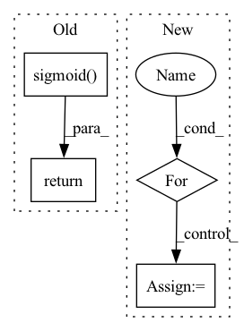

Pattern ID :8460
Before Change
:return:
items_embedding = self.item_embedding(torch.tensor([i for i in range(self.items_total)]).to(nodes_output.device))
alpha = torch.sigmoid( self.alpha)
embed = (1 - alpha) * items_embedding.clone() + alpha * nodes_output
return embed
class AggregateTemporalNodeFeatures(nn.Module):After Change
num_nodes = self.items_total
items_embedding = self.item_embedding(torch.tensor([i for i in range(self.items_total)]).to(nodes_output.device))
batch_embedding = []
for _ in range(batch_size):
output_node_features = nodes_output[id:id + num_nodes, :]
embed = (1 - self.alpha) * items_embedding
embed = embed + self.alpha * output_node_features
batch_embedding.append(embed)
id += num_nodes
batch_embedding = torch.stack(batch_embedding)In pattern: SUPERPATTERN
Frequency: 3
Non-data size: 4
Instances Fragment ID: 29435193
Project Name: benedekrozemberczki/pytorch_geometric_temporal
Commit Name: 6c36f8a6c545046914ce31c842b9648ac37c8b93
Time: 2021-07-24
Author: benedek.rozemberczki@gmail.com
File Name: torch_geometric_temporal/nn/attention/dnntsp.py
M Class Name: GlobalGatedUpdater
N Class Name: GlobalGatedUpdater
M Method Name: forward(2)
N Method Name: forward(2)
M Parent Class: nn.Module
N Parent Class: nn.Module
M File Name: torch_geometric_temporal/nn/attention/dnntsp.py
N File Name: torch_geometric_temporal/nn/attention/dnntsp.py
M Start Line: 84
M End Line: 87
N Start Line: 88
N End Line: 101
Before Change
// x = layer(x)
// Need to be normalized
x = torch.sigmoid( self.test(x))
// x = F.linear(F.normalize(x.squeeze(1)), F.normalize(self.weight))
return x
After Change
x : torch.Tensor
Torch tensor.
for layer in self.blocks:
x = layer(x)
// Need to be normalized
x = F.linear(F.normalize(x.squeeze(1)), F.normalize(self.weight)) Fragment ID: 29435195
Project Name: speechbrain/speechbrain
Commit Name: 43c5cdfb196744371a877e85a82f8b5b975ca93f
Time: 2021-11-07
Author: parcollet.titouan@gmail.com
File Name: speechbrain/lobes/models/ECAPA_TDNN.py
M Class Name: Classifier
N Class Name: Classifier
M Method Name: forward(2)
N Method Name: forward(2)
M Parent Class: torch.nn.Module
N Parent Class: torch.nn.Module
M File Name: speechbrain/lobes/models/ECAPA_TDNN.py
N File Name: speechbrain/lobes/models/ECAPA_TDNN.py
M Start Line: 567
M End Line: 569
N Start Line: 561
N End Line: 566
Before Change
// Update gate of the GRU.
update_gate_conv = layers.SNConv2D(num_channels, self._kernel_size, sn_eps=self._sn_eps)
update_gate = F.sigmoid( update_gate_conv(xh))
// Gate the inputs.
gated_input = torch.cat([x, read_gate * prev_state], dim=1)
// Gate the cell and state / outputs.
output_conv = layers.SNConv2D(num_channels, self._kernel_size, sn_eps=self._sn_eps)
c = F.relu(output_conv(gated_input))
out = update_gate * prev_state + (1.0 - update_gate) * c
new_state = out
return out, new_state
After Change
def forward(self, x: torch.Tensor, hidden_state=None) -> torch.Tensor:
outputs = []
for step in range(x.size(1)):
// Compute current timestep
output, hidden_state = self.cell(x[:, step, :, :, :], hidden_state)
outputs.append(output)
// Stack outputs to return as tensor
outputs = torch.stack(outputs, dim=0) Fragment ID: 29435194
Project Name: openclimatefix/skillful_nowcasting
Commit Name: b080785f5f559396d0b7e1a52d1c6d9a948d9439
Time: 2021-11-08
Author: jacob@bieker.tech
File Name: nowcasting_gan/layers/ConvGRU.py
M Class Name: ConvGRU
N Class Name: ConvGRU
M Method Name: forward(3)
N Method Name: forward(3)
M Parent Class: torch.nn.Module
N Parent Class: torch.nn.Module
M File Name: nowcasting_gan/layers/ConvGRU.py
N File Name: nowcasting_gan/layers/ConvGRU.py
M Start Line: 19
M End Line: 51
N Start Line: 70
N End Line: 78